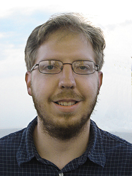

Eric M. Leibensperger
Associate Professor in the Center for Earth
and Environmental Science
SUNY Plattsburgh
101 Broad Street
Hudson Hall 137
Plattsburgh, NY 12901
p: 518-564-4104
eric.leibensperger [at] plattsburgh.edu
Fall 2017 Office Hours:
Monday 1:00-3:00; Wednesday 1:00-2:00; by appointment